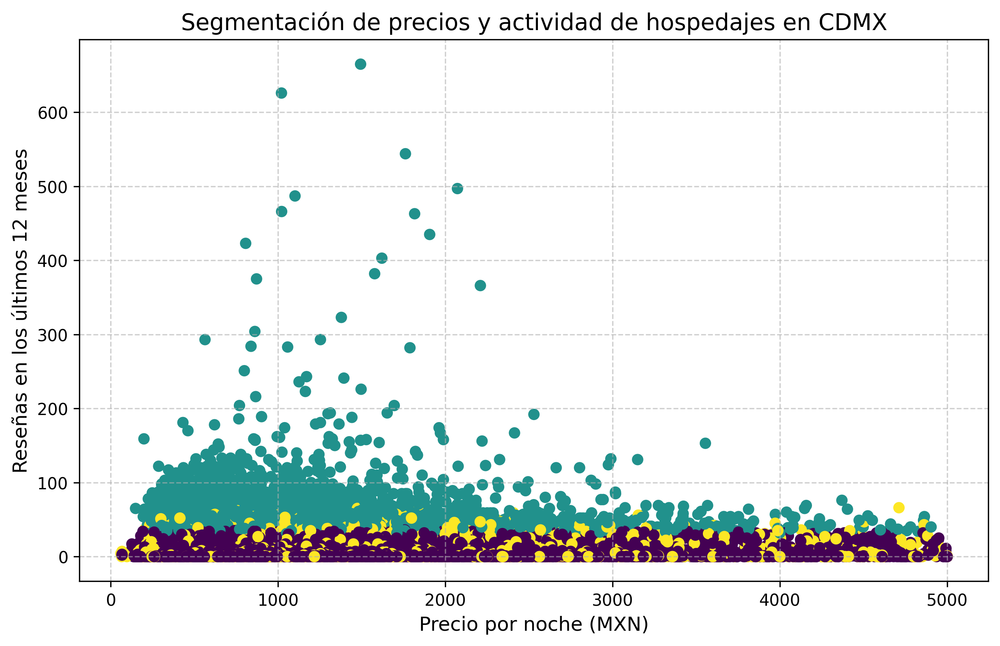

A solo unos días del silbatazo oficial de la Copa Mundial de la FIFA 2026, la Ciudad de México enfrenta el desafío de albergar a todas y todos los aficionados de todos los 48 países que se harán presentes a lo largo de estas 5 semanas que nos esperan de este gran evento del año.
Un análisis técnico reveló que la oferta visible de Airbnb, una página de propiedades y rentas en la CDMX, no refleja la oferta funcional. Al procesar alrededor de 4 mil 679 registros a través de un algoritmo de clustering, se identifica que la capacidad real representa solo una cuarta parte de lo que presume la plataforma.
La investigación segmenta las propiedades mediante tres variables: precio, disponibilidad y reseñas en el último año. La cantidad reflejó apenas unas 911 propiedades, es decir, que el 24.6 por ciento de estas tienen actividad sostenida, mientras que tres de cada cuatro operan bajo actividad mínima o casi nula. Estas últimas se encuentran registradas en el catálogo, pero no en el mercado real.

Contrario a lo que se podía suponer, el precio no es el factor que segmenta el mercado. La diferencia en la mediana de costo entre los grupos activos e inactivos es de apenas 107 pesos mexicanos por noche, apenas concentrándose principalmente en un rango de 500 a 2 mil pesos mexicanos, viendo como pasando dicha cantidad decae.
La oferta presenta una marcada concentración geográfica. Las alcaldías Cuauhtémoc, Miguel Hidalgo y Benito Juárez acumulan el 70 por ciento de las propiedades totales de la ciudad. Además, el 10 por ciento de los anfitriones apenas controla el 32.4 por ciento de los listados de cada una de las propiedades de la plataforma una profesionalización del mercado en lo que debería ser una “economía colaborativa”
Ante el inicio de la Copa del mundo este jueves, los datos revelan una infraestructura de hospitalidad con una brecha operativa significativa. Con 760 propiedades con cero disponibilidades y un volumen de listados inactivos, la capacidad de respuesta es, cuando menos, desigual. Este análisis invita a una gestión más consciente de la logística y de la oferta de los visitantes que estarán próximos a llegar a la capital.